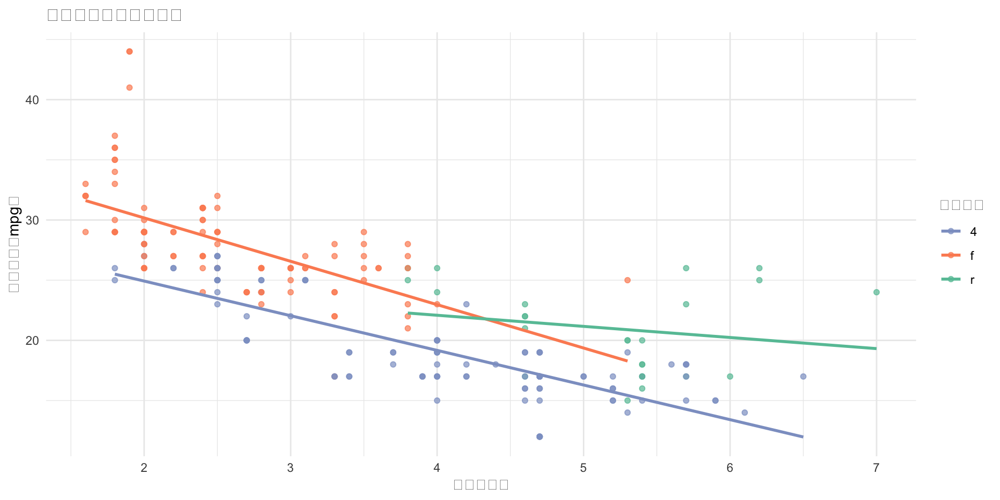

2026-05-14
在开始本节之前，请确保您已安装并加载以下的包：
Tip
tidyverse: 用于数据清洗、转换与可视化。
modelsummary: 用于快速生成专业的统计模型汇总表。
flextable: 用于创建可高度自定义的表格（支持导出到 Word/PPT）。
officer: 用于通过代码直接操作 Word 或 PowerPoint 文档。
openxlsx：导出数据到Excel文档。
Tip
工作目录：先确认文件保存在哪里
Tip
所有保存操作默认输出到工作目录。强烈建议使用 RStudio Project 管理文件，这样工作目录始终是项目根目录，路径不会因电脑不同而出错。
也可以在文件路径中写明子文件夹，例如 “output/my_plot.png”
# A tibble: 3 × 4
cyl n mpg_mean hp_mean
<dbl> <int> <dbl> <dbl>
1 4 11 26.7 82.6
2 6 7 19.7 122.
3 8 14 15.1 209. Tip
row.names = FALSE 几乎是必写的参数，否则 CSV 会多出一列难看的行号（1, 2, 3…）。
ggsave()
Tip
dpi = 300 是学术期刊的最低要求，普通屏幕显示用 dpi = 96 即可，文件更小。
| 格式 | 类型 | 适合场景 |
|---|---|---|
| PNG | 位图 | Word、PPT、网页，dpi ≥ 300 |
| SVG | 矢量图 | 网页、可编辑图形，放大不失真 |
| 矢量图 | 期刊投稿、LaTeX 文档 |
Tip
期刊投稿首选 PDF 或 SVG，放大后线条依然清晰；Word 文档用 PNG（300 dpi），兼容性最好。
library(modelsummary)
datasummary(mpg + cyl + disp + hp + drat + wt ~
N + Mean + SD + Median + Min + Max,
data = mtcars,
fmt = 3,
output = 'flextable') |>
theme_apa() |> # 应用标准 APA 格式
autofit() |> # 自动调整列宽
font(fontname = "Times New Roman", part = "all") |>
save_as_docx(path = "output/Table1_APA_Style.docx")Tip
这是 Windows 用户最常遇到的报错原因是 Excel/Word 锁定了文件，R 无法写入。
| 输出内容 | 推荐函数 | 常用格式 |
|---|---|---|
| 数据框 → CSV | write.csv() |
.csv |
| 数据框 → Excel | write.xlsx() |
.xlsx |
| ggplot 图片 | ggsave() |
.png .svg .pdf |
| 表格 → Word | flextable |
.docx |
2小时R入门 | © 2026 顶刊研习社, Li Zongzhang